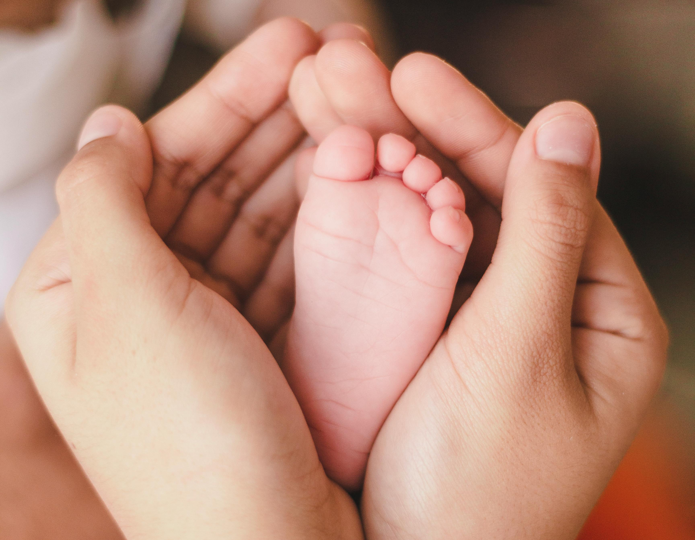

Pour les Femmes Enceintes
Votre Maternité : une métamorphose
Durant les neuf mois de grossesse, de la conception à
l’accouchement, vous subissez des changements
physiques considérables : votre colonne vertébrale a tendance à se cambrer
, la malposition du bassin
, du
sacrum
et du coccyx
peuvent rendre l’accouchement difficile
. Tous ces troubles peuvent affecter le
déroulement de votre grossesse et de votre accouchement.
Durant la grossesse, l’ostéopathe rééquilibre votre organisme dans
sa
globalité en recréant de la mobilité
entre vos systèmes musculaires, organiques et osseux.
Après la naissance, l’ostéopathe contrôle si certaines structures
sollicitées lors de l’accouchement
peuvent engendrer des déséquilibres, notamment au niveau de la colonne lombaire
suite à la péridurale, ainsi
qu’au niveau du bassin
et des organes (vessie, utérus, etc.).
L’ostéopathe peut également vous aider à mieux
gérer votre
stress ou votre
fatigue, notamment vos fonctions
respiratoires. Il est vital de maintenir votre équilibre et de vous
renforcer afin de préserver
votre santé
et celle de votre enfant.
Pendant la grossesse, vous subissez des transformations
physiques et
psychiques importantes. Il est vital
de maintenir votre équilibre et de vous renforcer afin de préserver votre
santé et celle de votre enfant.
L’ostéopathie est une médecine
complémentaire particulièrement adaptée aux
femmes enceintes et aux bébés.
Votre ostéopathe agit, en complément du gynécologue et de
l’obstétricien, pour vous préparer un avenir
serein.
Avant la grossesse
Il est intéressant de consulter un ostéopathe avant le
début de la grossesse afin que celle-ci se déroule dans les meilleures
conditions possibles.
Pendant la grossesse
L'ostéopathe va travailler pour redonner une bonne
mobilité à l'ensemble du corps de la femme enceinte
et pour libérer le bassin afin de faciliter l'accouchement.
Le traitement sera adapté à la femme enceinte et ne
sera pas dangereux pour le futur bébé. Le traitement ostéopathique de
la femme enceinte est très doux, indolore et sans risque. Son but va
être de permettre au bébé d'avoir plus de place et à la future maman
de moins souffrir à cause des changements survenant dans son corps.
Après la grossesse
Après l'accouchement, il arrive que certaines femmes ressentent des
douleurs, surtout au niveau du bassin, du sacrum et des
lombaires. Une consultation d'ostéopathie peut alors être bénéfique.

Pour les Nouveau-nés
L’accouchement fait subir à votre enfant de fortes
contraintes qui agissent parfois sur la mobilité des os de son crâne et de
son rachis.
Elles peuvent provoquer des perturbations fonctionnelles
immédiates ou différées. Des déformations (parfois visibles, souvent insoupçonnables ou
bénignes) existent ou se développent chez de nombreux nouveau-nés, votre
ostéopathe saura les identifier et y remédier.
A chacun son équilibre
Un examen ostéopathique permet de vérifier
l’équilibre entre les systèmes osseux, organiques et
musculaires de votre enfant.
Les interventions chez le nourrisson peuvent prévenir :
- Plagiocéphalies (aplatissement des os du crâne)
- Troubles digestifs (régurgitations, coliques, constipation, etc.)
- Otites et rhino-pharyngites
- Troubles du sommeil et bronchiolites à répétition
Ainsi, l’ostéopathe rétablit au
nourrisson son rythme normal.
Les signes
- Naissance prématurée, par césarienne ou par siège
- Le cordon ombilical a été enroulé autour du cou.
- Le crâne est déformé par l’utilisation de forceps ou de spatules.
- Régurgitation, dort peu ou pleure en permanence.
- Présente une respiration bruyante ou des difficultés à s’alimenter.
- Se cambre en arrière durant la tétée.
- Se tient en « virgule » et tourne la tête plus facilement d’un côté.
- Présente un méplat à l’arrière de la tête.
- A des coliques, des signes de nervosité, d’hypertonicité ou d’apathie.
- Est sujet à des otites ou rhinites à répétition, des signes de
torticoli congénital, un strabisme, etc.

Pour les Seniors
Moins de souplesse, c’est normal
Au fil des années, les ligaments perdent de leur élasticité, les
cartilages s’usent et s’amincissent. Les gestes de la vie quotidienne peuvent devenir
douloureux ou difficiles. La vigueur et
l’endurance diminuent, et la perte musculaire se fait sentir. Les
douleurs diffuses apparaissant tendent à faire diminuer l’activité
quotidienne.
L’ostéopathe vous aidera à conserver le niveau d’activité destiné
à préserver votre mobilité et votre santé.
Arthrose et Soutien ostéopathique
Après 50 ans, l’arthrose du genou, la plus courante, atteint
3 millions de Français. Votre ostéopathe peut vous accompagner
dans les suites d’arthrose ! Avant d’envisager une intervention
chirurgicale et pour limiter la consommation d’anti-inflammatoires
ou d’antalgiques, le traitement ostéopathique peut vous aider à
retrouver un certain confort.
Préserver votre mobilité
Vous ressentez des douleurs articulaires ou vertébrales, des
raideurs, des tensions chroniques. Votre
squelette et vos articulations connaissent un
vieillissement. L’ostéopathie est particulièrement adaptée à
cette période de la vie.
Quand Consulter un Ostéopathe ?
À titre préventif :
- Pour faire un bilan ostéopathique.
- Avant de commencer ou reprendre une activité physique.
- En complément de cure.
À titre curatif :
- Après entorse, faux mouvements, longue immobilisation,
intervention chirurgicale, chutes sans lésions visibles sur une radiologie, après
tout traumatisme.
- Pour douleurs d’origine vertébrale, cervicales, dorsales, lombaires ou
coccygiennes.
- Pour engourdissement des membres.
- Pour certains types de névralgies (sciatalgie, cruralgie, etc.).
- Pour maux de tête, syndrome vertigineux.
- En cas de difficultés de locomotion.
- Pour douleurs articulaires (genou, hanche, coude, poignet, etc.).
- En cas d’arthrose.
- Pour troubles du sommeil.
- Pour troubles digestifs.

Pour les Sportifs
Les Risques de la Pratique du Sport
Contractures, entorses, déchirures
musculaires, inflammations locales ou douleurs chroniques
peuvent résulter de la pratique assidue ou ponctuelle d'un sport. Toute restriction ou perte de
mobilité des muscles, des articulations ou des éléments
péri-articulaires peut altérer vos performances et votre état de
santé.
Soigner Vos Traumatismes Sportifs
Votre ostéopathe traite vos traumatismes
sportifs et vous aide à conserver votre équilibre corporel tout en améliorant
vos performances. Grâce à des techniques ostéopathiques appropriées,
basées sur la notion de globalité, il restaure la mobilité de vos systèmes
osseux, musculaires et organiques.
Certaines formes d’entorse, de foulure, de
tendinopathie et de pubalgie peuvent être aisément réduites par votre
ostéopathe. Adaptée aux enfants, l’ostéopathie est
également indiquée pour corriger les conséquences de chutes, de mouvements
répétés ou de traumatismes divers.
Renforcer Votre Corps
Votre ostéopathe peut améliorer votre souplesse
articulaire et ligamentaire, ainsi qu’optimiser vos capacités
physiques et respiratoires pour une meilleure récupération après l’effort.
Quand Consulter un Ostéopathe pour le Sport ?
Douleurs et récupérations :
- Douleurs articulaires.
- Douleurs tendino-musculaires.
- Séquelles d’entorses ou d'interventions chirurgicales.
- Récupération difficile entre et après les épreuves.
À titre préventif :
- Pour faire un bilan ostéopathique.
- Pour préparer une épreuve sportive.
- Pour optimiser vos capacités physiques.
- Avant de démarrer une nouvelle activité sportive ou une nouvelle
saison.
- Avant une pratique occasionnelle.
- Après une pratique sportive intense.
À titre curatif :
- Après un traumatisme, une intervention chirurgicale, ou une
chute sans lésion visible à la radio, pour des séquelles de
fractures.
- Pour rééquilibrer avec précision les axes articulaires perturbés par un
choc.
L’ostéopathie optimise les capacités sportives
Que vous soyez sportif occasionnel ou régulier, votre
corps subit des contraintes. Cela peut entraîner des perturbations
physiques ou des douleurs gênantes. Votre ostéopathe
intervient pour prévenir ou guérir les maux liés à la pratique
sportive.

Ostéopathie en entreprise
Votre ostéopathe, Maxime CHOISEAU, exerçant à Noisy-le-Grand, aux portes de
Paris, est formée à la prise en charge des troubles musculo-squelettiques induits par l'activité professionnelle ou le stress lié à celle-ci.
Ostéopathie et Troubles Musculo-Squelettiques (TMS)
Les troubles musculo-squelettiques (TMS) recouvrent un large éventail de
pathologies qui affectent principalement les muscles, les nerfs et les tendons. Ces pathologies entraînent
des douleurs de plus en plus gênantes pouvant aller jusqu'à l'incapacité de travailler.
Les douleurs les plus fréquentes sont :
- Lombalgies (douleurs dans le bas du dos).
- Dorsalgies (douleurs dans le milieu du dos).
- Tendinites.
- Cervicalgies (douleurs au niveau de la nuque).
L'ostéopathie est en première ligne dans la prévention et le traitement de
ces douleurs, apportant au patient une amélioration de son état grâce à une prise en charge globale et à des
gestes non invasifs.
Pourquoi Faire Appel à un Ostéopathe en Entreprise ?
L'ostéopathie au sein des entreprises est devenue un réel atout.
Certaines formes d’entorse, de foulure, de
tendinopathie et de pubalgie peuvent être aisément réduites par votre
ostéopathe. Adaptée aux enfants, l’ostéopathie est
également indiquée pour corriger les conséquences de chutes, de mouvements
répétés ou de traumatismes divers.
Renforcer Votre Corps
Selon une étude menée par Hygie en 2005, "près d'1/4 des salariés a pris au
moins un arrêt maladie en 2005" (23%).
Ces interruptions de travail peuvent causer du tort à l'entreprise, allant
même jusqu'à handicaper son bon fonctionnement.
Devant cette augmentation constante du nombre d'arrêts de travail, il est
nécessaire pour les entreprises de trouver des solutions. C'est là que l'ostéopathie entre en jeu
En effet, selon la CRAMIF, plus des 3/4 des maladies professionnelles
reconnues sont des troubles musculo-squelettiques.
La prise en charge ostéopathique, au sein même de l'entreprise, facilite
l'accès aux soins des employés, sans perturber leur emploi du temps professionnel.
Elle permet également à l'ostéopathe d'évaluer l'ergonomie du poste de
travail, et donc de donner des conseils précis et concrets aux salariés afin de l'améliorer. Le traitement
ostéopathique peut ainsi permettre une diminution du nombre d'arrêts de travail, et même en réduire leur
durée.
Une Efficacité et un Bien-Être Retrouvés
La prise en charge ostéopathique permet une amélioration de la productivité
et de la qualité du travail des employés.
De plus, cette démarche sera très appréciée par les salariés, leur montrant
l'importance que l'entreprise attache à leurs conditions de travail et à leur bien-être.
En définitive, l'ostéopathie confère aux salariés une meilleure adaptation à
leurs contraintes de travail, permettant ainsi un gain de concentration dans une optique de recherche de
productivité.
Pour tout renseignement concernant l'intervention de votre ostéopathe en
entreprise, n'hésitez pas à la contacter par téléphone ou par mail via la rubrique "Contact".